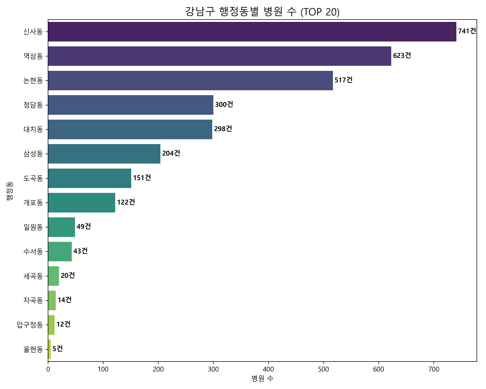
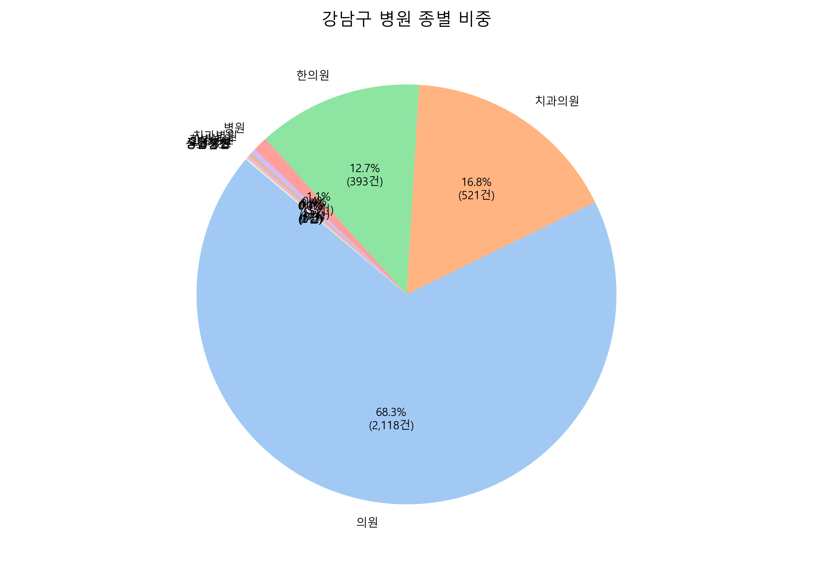
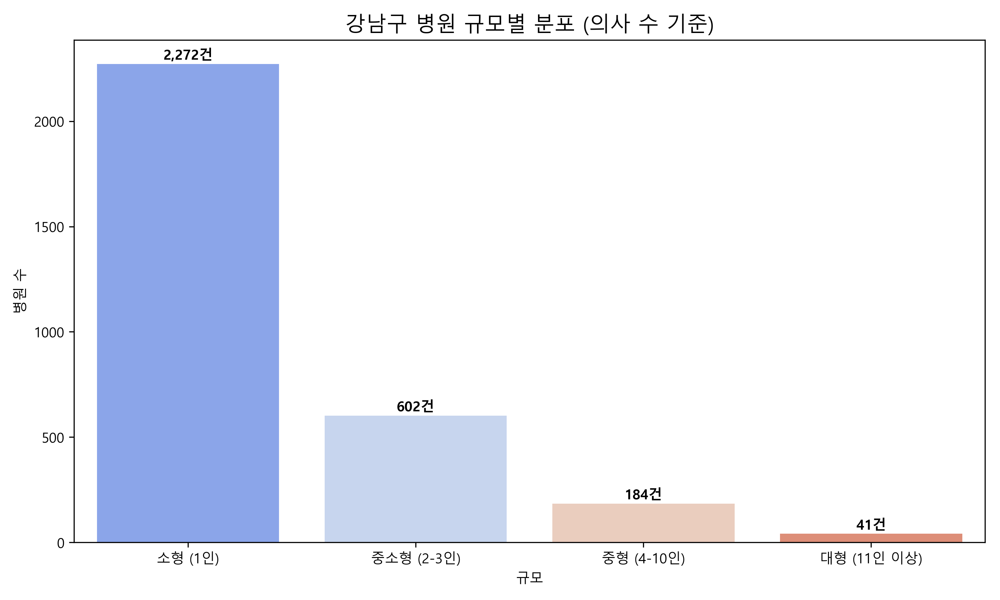
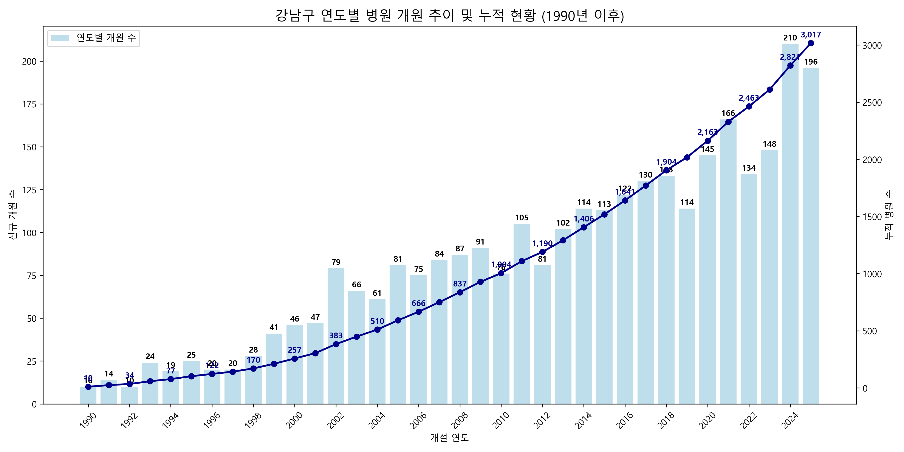

강남구 병원 현황 시각화 보고서
데이터 요약
지역
: 서울특별시 강남구
기준 시점
: 2025년 12월
총 병원 수
: 3,099개
분석 항목
: 행정동별 분포, 종별 비중, 주요 진료과목, 규모 분포, 개원 추이
행정동별 병원 수 분포

강남구 내 주요 행정동별 병원 밀집도를 보여줍니다. 신사동, 역삼동, 압구정동 순으로 높은 밀집도를 보입니다.
병원 종별 비중

상급종합, 종합병원, 의원 등 병원 종별 구성을 나타냅니다. 의원급이 압도적인 비중을 차지합니다.
병원 규모별 분포

의사 수에 따른 병원 규모 분포입니다. 대부분의 병원이 1인 중심의 소형 병원입니다.
연도별 개원 추이

강남구의 연도별 신규 개원 현황과 누적 병원 수 추이입니다. 최근으로 올수록 개원 속도가 빨라지며 시장이 성숙해지는 과정을 볼 수 있습니다.